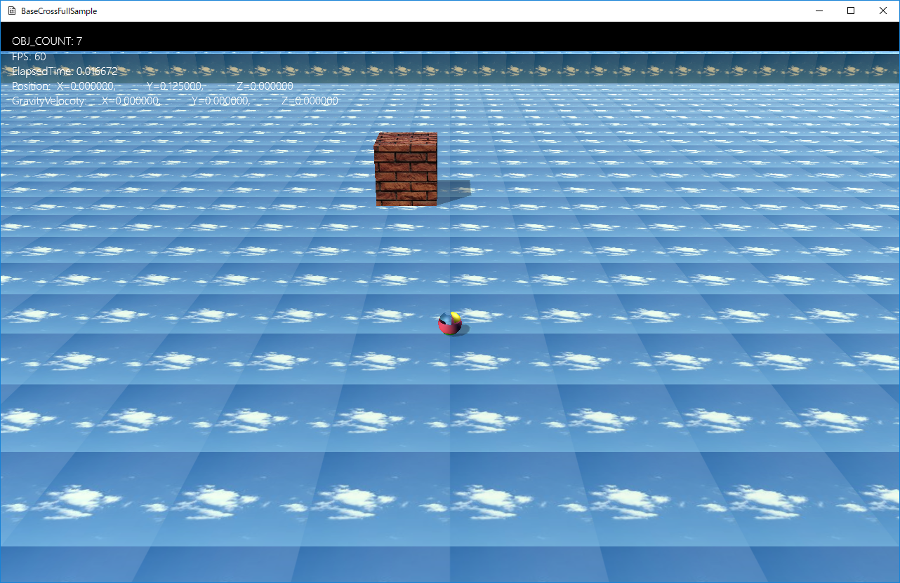
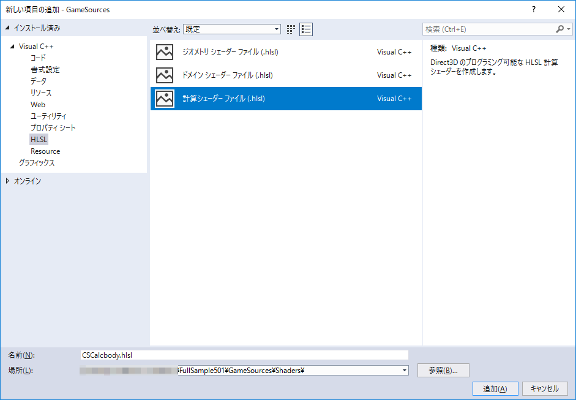
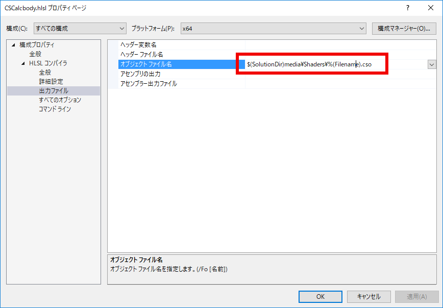

図1501a

図1501b
作成したシェーダーのプロパティの全般でシェーダモデルはShader Model 5.0 (/5_0)にし、出力ファイルが以下のようになるのを確認してください。

図1501c
そして以下を記述します。
//--------------------------------------------------------------------------------------
// コンスタントバッファ
//--------------------------------------------------------------------------------------
cbuffer CB : register(b0)
{
float4 g_paramf;
};
//--------------------------------------------------------------------------------------
// エレメントデータ
//--------------------------------------------------------------------------------------
struct ElemData
{
float4 pos;
};
//入出力用バッファ
RWStructuredBuffer<ElemData> posData : register(u0);
//共有変数
groupshared float4 sharedPos;
[numthreads(1, 1, 1)]
void main( uint3 DTid : SV_DispatchThreadID )
{
sharedPos = posData[DTid.x].pos;
GroupMemoryBarrierWithGroupSync();
sharedPos.x = sin(g_paramf.x);
GroupMemoryBarrierWithGroupSync();
posData[DTid.x].pos = sharedPos;
}
struct CB
{
// paramf[0] == Totaltime
float paramf[4];
};
//コンスタントバッファのヘッダ部
DECLARE_DX11_CONSTANT_BUFFER(ConstantBufferCalcbody, CB)
//コンスタントバッファの実体部
IMPLEMENT_DX11_CONSTANT_BUFFER(ConstantBufferCalcbody)
DECLARE_DX11_COMPUTE_SHADER(ComputeSaderCalcbody)
//CSの実体部
IMPLEMENT_DX11_COMPUTE_SHADER(ComputeSaderCalcbody, App::GetApp()->GetShadersPath() + L"CSCalcbody.cso")
class MoveBox : public GameObject {
// エレメントデータの構造体
struct Element
{
XMFLOAT4 pos;
};
//エレメントバッファ
ComPtr<ID3D11Buffer> m_Buffer;
//アクセスビュー
ComPtr < ID3D11UnorderedAccessView> m_UAV;
//リードバックバッファ
ComPtr<ID3D11Buffer> m_ReadBackBuffer;
//トータルアイム
float m_TotalTime;
Vec3 m_Scale;
Vec3 m_Rotation;
Vec3 m_Position;
Vec3 m_Velocity;
public:
//構築と破棄
MoveBox(const shared_ptr<Stage>& StagePtr,
const Vec3& Scale,
const Vec3& Rotation,
const Vec3& Position
);
virtual ~MoveBox();
//初期化
virtual void OnCreate() override;
//操作
virtual void OnUpdate() override;
};
// エレメントデータの構造体
struct Element
{
XMFLOAT4 pos;
};
//エレメントバッファ
ComPtr<ID3D11Buffer> m_Buffer;
//アクセスビュー
ComPtr < ID3D11UnorderedAccessView> m_UAV;
//リードバックバッファ
ComPtr<ID3D11Buffer> m_ReadBackBuffer;
void MoveBox::OnCreate() {
//中略
auto Dev = App::GetApp()->GetDeviceResources();
auto pDx11Device = Dev->GetD3DDevice();
auto pID3D11DeviceContext = Dev->GetD3DDeviceContext();
//エレメントバッファ
D3D11_BUFFER_DESC buffer_desc = {};
buffer_desc.ByteWidth = sizeof(Element);
buffer_desc.Usage = D3D11_USAGE_DEFAULT;
buffer_desc.BindFlags = D3D11_BIND_UNORDERED_ACCESS | D3D11_BIND_SHADER_RESOURCE;
buffer_desc.MiscFlags = D3D11_RESOURCE_MISC_BUFFER_STRUCTURED;
buffer_desc.StructureByteStride = sizeof(Element);
ThrowIfFailed(
pDx11Device->CreateBuffer(&buffer_desc, nullptr, &m_Buffer),
L"エレメントバッファ作成に失敗しました",
L"pDx11Device->CreateBuffer()",
L"MoveBox::OnCreate()"
);
//アクセスビュー
D3D11_UNORDERED_ACCESS_VIEW_DESC uavbuffer_desc = {};
uavbuffer_desc.Format = DXGI_FORMAT_UNKNOWN;
uavbuffer_desc.ViewDimension = D3D11_UAV_DIMENSION_BUFFER;
uavbuffer_desc.Buffer.NumElements = 1;
ThrowIfFailed(
pDx11Device->CreateUnorderedAccessView(m_Buffer.Get(), &uavbuffer_desc, &m_UAV),
L"アクセスビュー作成に失敗しました",
L"pDx11Device->CreateUnorderedAccessView()",
L"MoveBox::OnCreate()"
);
//リードバックバッファ
D3D11_BUFFER_DESC readback_buffer_desc = {};
readback_buffer_desc.ByteWidth = sizeof(Element);
readback_buffer_desc.Usage = D3D11_USAGE_STAGING;
readback_buffer_desc.CPUAccessFlags = D3D11_CPU_ACCESS_READ;
readback_buffer_desc.StructureByteStride = sizeof(Element);
ThrowIfFailed(
pDx11Device->CreateBuffer(&readback_buffer_desc, nullptr, &m_ReadBackBuffer),
L"リードバックバッファ作成に失敗しました",
L"pDx11Device->CreateBuffer()",
L"MoveBox::OnCreate()"
);
}
１、定義用の構造体（D3D11_BUFFER_DESCなど）を作成 ２、構築用の関数を呼び出す。その際戻り値をチェックする
void MoveBox::OnUpdate() {
float elapsedTime = App::GetApp()->GetElapsedTime();
m_TotalTime += elapsedTime;
if (m_TotalTime >= XM_2PI) {
m_TotalTime = 0;
}
//デバイスの取得
auto Dev = App::GetApp()->GetDeviceResources();
auto pID3D11DeviceContext = Dev->GetD3DDeviceContext();
//コンスタントバッファの設定
CB cb = {};
cb.paramf[0] = m_TotalTime;
ID3D11Buffer* pConstantBuffer = ConstantBufferCalcbody::GetPtr()->GetBuffer();
pID3D11DeviceContext->UpdateSubresource(pConstantBuffer, 0, nullptr, &cb, 0, 0);
pID3D11DeviceContext->CSSetConstantBuffers(0, 1, &pConstantBuffer);
//現在の位置情報の取得
auto ptrTransform = GetComponent<Transform>();
//エレメントの入力
Element elemData;
Vec4 pos4(ptrTransform->GetPosition(), 0);
elemData.pos = pos4;
pID3D11DeviceContext->UpdateSubresource(m_Buffer.Get(), 0, nullptr, &elemData, 0, 0);
//CSの設定
pID3D11DeviceContext->CSSetShader(ComputeSaderCalcbody::GetPtr()->GetShader(), nullptr, 0);
//アクセスビューの設定
pID3D11DeviceContext->CSSetUnorderedAccessViews(0, 1, m_UAV.GetAddressOf(), nullptr);
//CSの実行
pID3D11DeviceContext->Dispatch(1, 1, 1);
//結果の読み取り
D3D11_MAPPED_SUBRESOURCE MappedResource = { 0 };
pID3D11DeviceContext->CopyResource(m_ReadBackBuffer.Get(), m_Buffer.Get());
if (SUCCEEDED(pID3D11DeviceContext->Map(m_ReadBackBuffer.Get(), 0, D3D11_MAP_READ, 0, &MappedResource)))
{
memcpy(&elemData, MappedResource.pData, sizeof(Element));
pID3D11DeviceContext->Unmap(m_ReadBackBuffer.Get(), 0);
Vec3 resuPos;
resuPos.x = elemData.pos.x;
resuPos.y = elemData.pos.y;
resuPos.z = elemData.pos.z;
ptrTransform->SetPosition(resuPos);
}
}
float elapsedTime = App::GetApp()->GetElapsedTime();
m_TotalTime += elapsedTime;
if (m_TotalTime >= XM_2PI) {
m_TotalTime = 0;
}
//デバイスの取得
auto Dev = App::GetApp()->GetDeviceResources();
auto pID3D11DeviceContext = Dev->GetD3DDeviceContext();
//コンスタントバッファの設定
CB cb = {};
cb.paramf[0] = m_TotalTime;
ID3D11Buffer* pConstantBuffer = ConstantBufferCalcbody::GetPtr()->GetBuffer();
pID3D11DeviceContext->UpdateSubresource(pConstantBuffer, 0, nullptr, &cb, 0, 0);
pID3D11DeviceContext->CSSetConstantBuffers(0, 1, &pConstantBuffer);
ConstantBufferCalcbody::GetPtr()->GetBuffer();
//現在の位置情報の取得
auto ptrTransform = GetComponent<Transform>();
//エレメントの入力
Element elemData;
Vec4 pos4(ptrTransform->GetPosition(), 0);
elemData.pos = pos4;
pID3D11DeviceContext->UpdateSubresource(m_Buffer.Get(), 0, nullptr, &elemData, 0, 0);
//CSの設定
pID3D11DeviceContext->CSSetShader(ComputeSaderCalcbody::GetPtr()->GetShader(), nullptr, 0);
//アクセスビューの設定
pID3D11DeviceContext->CSSetUnorderedAccessViews(0, 1, m_UAV.GetAddressOf(), nullptr);
//CSの実行
pID3D11DeviceContext->Dispatch(1, 1, 1);
//結果の読み取り
D3D11_MAPPED_SUBRESOURCE MappedResource = { 0 };
pID3D11DeviceContext->CopyResource(m_ReadBackBuffer.Get(), m_Buffer.Get());
if (SUCCEEDED(pID3D11DeviceContext->Map(m_ReadBackBuffer.Get(), 0, D3D11_MAP_READ, 0, &MappedResource)))
{
memcpy(&elemData, MappedResource.pData, sizeof(Element));
pID3D11DeviceContext->Unmap(m_ReadBackBuffer.Get(), 0);
Vec3 resuPos;
resuPos.x = elemData.pos.x;
resuPos.y = elemData.pos.y;
resuPos.z = elemData.pos.z;
ptrTransform->SetPosition(resuPos);
}
１、読み出し用のインターフェイスにm_Bufferをコピーする ２、読み出し用のインターフェイスをmapする ３、マップされたリソースから、CPU側のデータにコピーする ４、マップを開放する
pID3D11DeviceContext->CopyResource(m_ReadBackBuffer.Get(), m_Buffer.Get());
if (SUCCEEDED(pID3D11DeviceContext->Map(m_ReadBackBuffer.Get(), 0, D3D11_MAP_READ, 0, &MappedResource)))
memcpy(&elemData, MappedResource.pData, sizeof(Element));
pID3D11DeviceContext->Unmap(m_ReadBackBuffer.Get(), 0);
Vec3 resuPos;
resuPos.x = elemData.pos.x;
resuPos.y = elemData.pos.y;
resuPos.z = elemData.pos.z;
ptrTransform->SetPosition(resuPos);